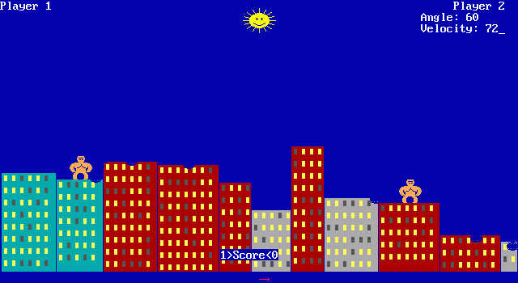
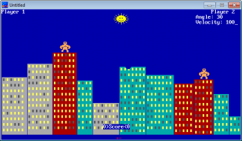
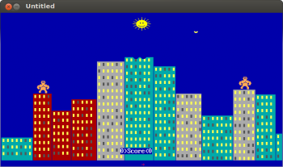

Image source: File:Gorillas screenshot.png – Wikipedia
I hope there are still some of you out there who remember the game Gorillas written in Basic. I have friends who still play this game from time to time.
These guys use Linux as their main operating system, so getting Gorillas to work needed the following workaround. First you had to get QBasic (from Microsoft or another source), then install DOSBox under Linux, start QBasic in DOSBox, load the source of Gorillas, and start the game. Each time you wanted to play you had to go through these steps, plus you had to adjust the game speed in DOSBox for your computer. I admit this isn’t difficult, but it is pokey.
So the other day I thought about rewriting this game in Basic and make it work under Windows and Linux. Finding the original(?) source wasn’t hard. The next step was to find a Basic compiler. I knew FreeBASIC, and after looking into it a little I’ve found out I can use the original graphics library of QBasic using FreeBASIC. The only problem was that I couldn’t set up FreeBASIC under 64 bit Linux, and there was the issue that FreeBASIC is a 32 bit only compiler too. I diched FreeBASIC and started to search for another Basic compiler, and luckily I’ve found QB64.
“Over 45 years of compatibility…” said the QB64 website. This aroused my interest, I thought that I might not need to rewrite the game at all but I may be able to compile the original source with QB64. To cut a long story short I had to touch only five lines of code in the original source to get the game work under Windows and Linux. Here is the receipt.
-
QB64 doesn’t like the inline definition on line 211, so comment it out.
|
211
|
'DEF FnRan (x) = INT(RND(1) * x) + 1
|
-
Add a new function declaration to the code (around line 90 in the original source).
|
1
|
DECLARE FUNCTION FnRan (x)
|
-
Add the following function definition to the end of the file.
|
1
2
3
4
5
|
FUNCTION FnRan (x)
FnRan = INT(RND(1) * x) + 1
END FUNCTION
|
-
Adjust the CONST SPEEDCONST constant’s value from 500 to 100,000,000 (line 123 in the original source). Note that you may need to use a different value, depending your computer.
|
123
|
CONST SPEEDCONST = 100000000
|
-
Compile.
That’s it. After these modifications the code will compile without any errors. I tried it on Windows and Linux. (I don’t have a Mac but I’m pretty sure this will work under OS X too.) See the proof below.
 
Edit #1
I’m posting a patch which contains all described modifications. To patch the original source first unpack the linked tar.gz file then enter the following command in your terminal.
|
1
|
patch gorilla.bas -o gorilla-patched.bas < gorilla.bas.patch
|
Note that you will need the diff and patch programs for this operation (available through Cygwin under Windows).
{kind=link}
{kind=link}
{kind=link}
{kind=link}